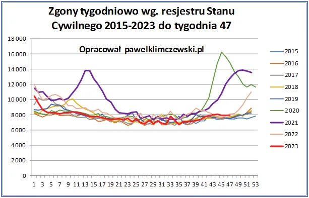

Bożek demokracji pożera własne dzieci.
Cierpliwość to podstawa zdobywania wiedzy. Pisałem po wyborach, że sprawdzę jak na zdrowie i życie rodaków przełoży się ich wysoka frekwencja w wyborach parlamentarnych 15 X 2023. Wojna polsko-polska zebrała swoje ofiary i to nie tylko symboliczne. Trzy tygodnie po masowym wystawaniu w kolejkach, gdy wiało chłodem z północy, mamy o około 100 więcej zgonów niż to wypadało w trendzie i po tym okresie widać nietypowy spadek.
Nie jest to wynik bardzo wyrazisty i świadczy o tym, że Polacy w tym dniu ubrali się jak trzeba. Zjawiska masowe mają zawsze swoje konsekwencje w fundamentalnych liczbach dla ludzkiego życia. Gdy 20 milionów ludzi wychodzi z domu na zimny wiatr, zamiast jak zwykle oglądać "kiepskich" przy grzańcu, nie wszyscy wyjdą z tego cało. Życie ludzkie jest kruche i potrafi zakończyć się z błahych przyczyn. Urwane koło od ciężarówki nie odróżnia na chodniku pieszych zaszczepionych od "foliarzy". Od dziecka słyszymy, że "przezorny zawsze jest ubezpieczony", ale należy w takiej sytuacji dodać, że nie oznacza to, że jest bezpieczny.

Czerwona linia pokazuje zgony w Polsce do 26 listopada 2023 i nie powinna iść powyżej poziomu z lat ubiegłych jak ma to miejsce obecnie. Ponad 200 tys. zgonów "ponadnormatywnych", jak pamiętamy w ponad 80% nie spowodowanych covidem, powinny przez kolejne lata zmniejszyć liczbę zgonów. To, co widzimy na wykresie oznacza, że trauma lockdownu na dłużej spowodowała skrócenie długości życia w Polsce przez najbliższe lata.
Dwa polskie plemiona złożyły skromną ofiarę na ołtarzu bożka demokracji. Niestety paranoja jaka towarzyszy wyborowi rządu zapewne spowoduje dalsze pogorszenie się stanu zdrowia naszych rodaków, głównie z powodu nadciśnienia i marskości wątroby. "Jak żyć panie premierze", gdy ci co myśleli, że wygrali wybory je przegrali, a ci co myśleli, że wybory przegrali je wygrali. Nawet TV, co to jest wyrocznią warszawską, mówiła przez miesiąc odwrotnie a teraz premier "patriotów" będzie bez bicia się za sejmem wskazywał na swego następcę polakożercę Donalda. "Biada, biada, biada, zawołał głosem donośnym orzeł lecący środkiem nieba..."
Paweł Klimczewski